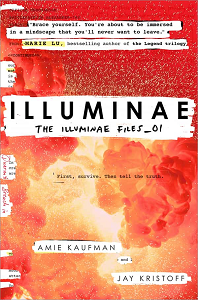

|  |
This morning, Kady thought breaking up with Ezra was the hardest thing she’d have to do. This afternoon, her planet was invaded. The year is 2575, and two rival megacorporations (United Terran Authorities (UTA) and BeiTech) are at war over a planet that’s little more than an ice-covered speck at the edge of the universe. Too bad nobody thought to warn the people living on it. With enemy fire raining down on them, Kady and Ezra—who are barely even talking to each other—are forced to fight their way onto an evacuating fleet, with an enemy warship in hot pursuit. But their problems are just getting started. A deadly plague has broken out and is mutating, with terrifying results; the fleet's AI, which should be protecting them, may actually be their enemy; and nobody in charge will say what’s really going on. As Kady hacks into a tangled web of data to find the truth, it's clear only one person can help her bring it all to light: the ex-boyfriend she swore she'd never speak to again. |